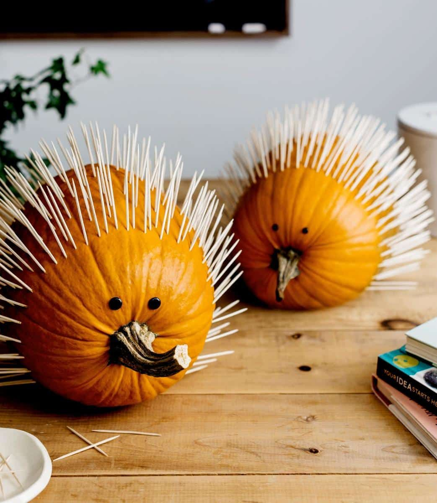
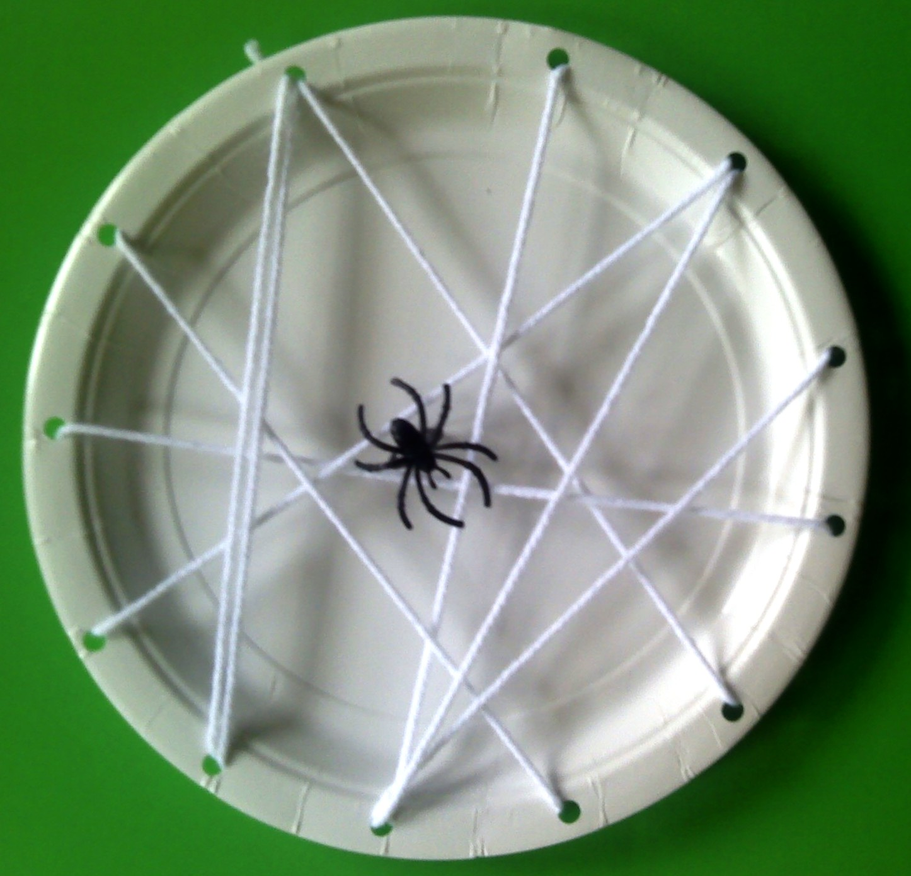
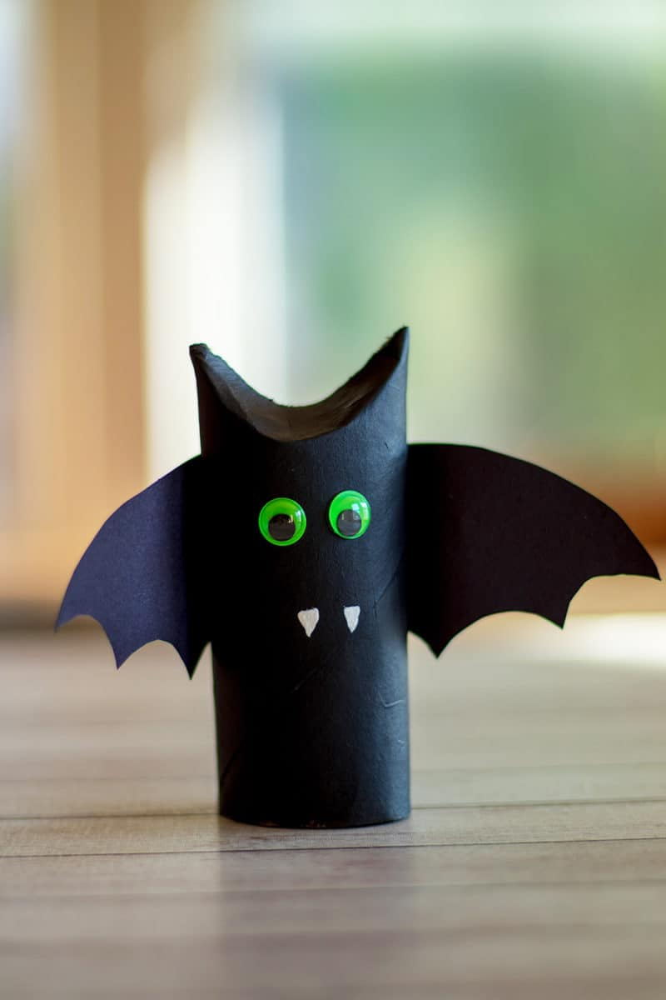
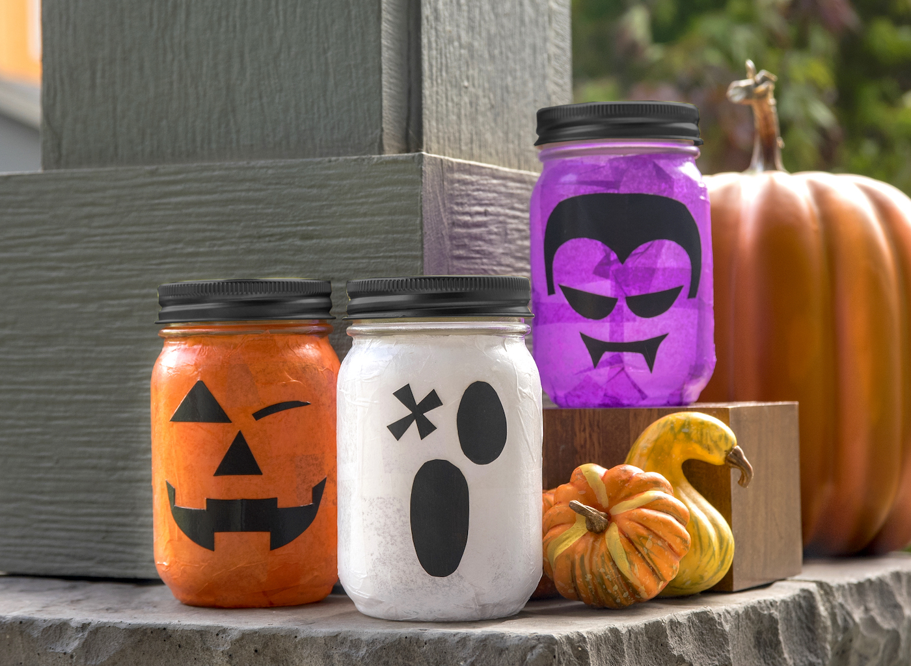
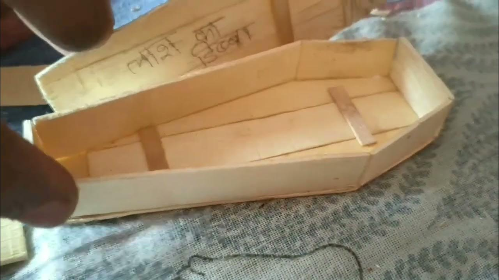
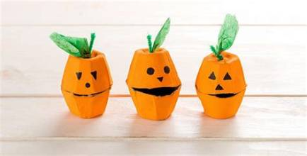
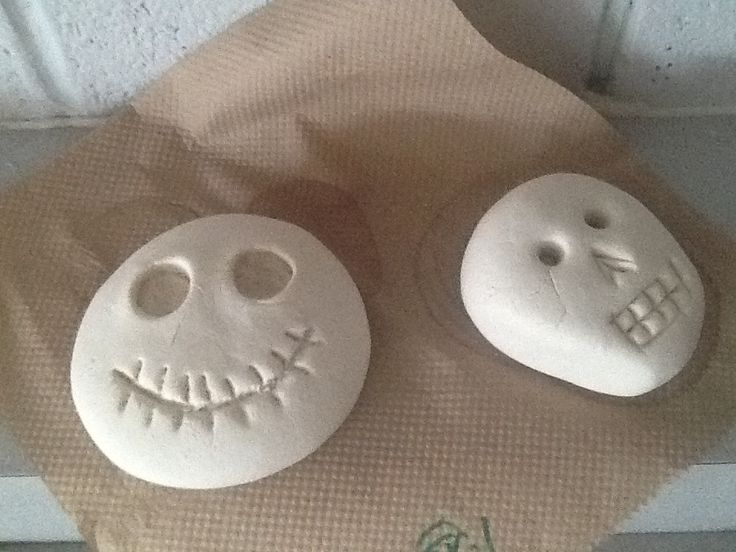
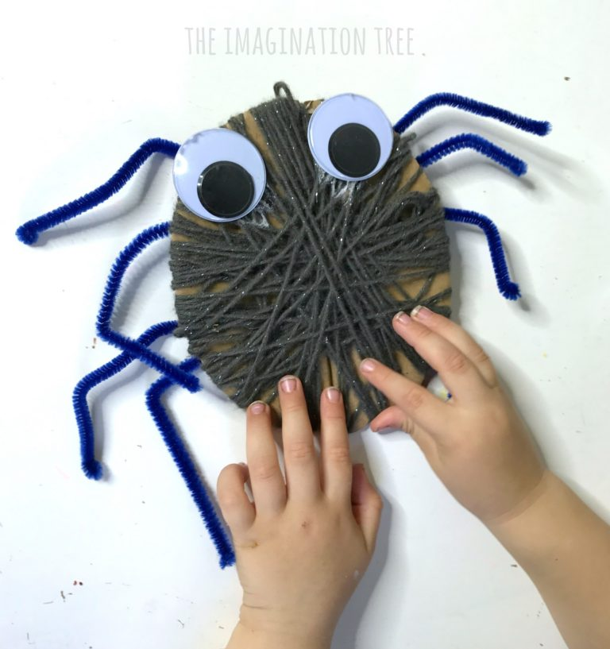
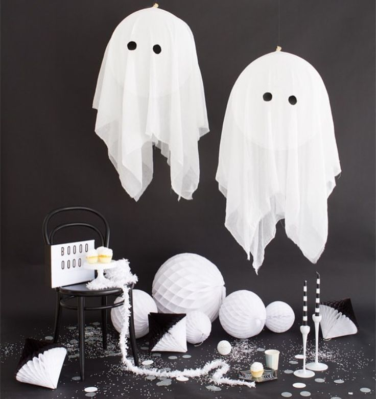

#1
Toothpick Porcupine Pumpkins
Skip the knife — just push toothpicks all over a pumpkin for an instant, spiky porcupine look.

#2
Paper Plate Spider Webs
Cut slits into a paper plate and weave yarn across it, then add a plastic spider in the middle.

#3
Toilet Paper Roll Bats
Paint a cardboard tube black, glue on felt wings and googly eyes for an easy window decoration.

#4
Handprint Ghost Cards
A white handprint on black card stock, finished with two dot eyes — a sweet keepsake craft.

#5
Mason Jar Lanterns
Orange or black tissue paper on a jar with a battery tea light inside makes a safe glowing lantern.

#6
Popsicle Stick Coffins
Glue craft sticks into a coffin shape, paint it, and tuck a tiny skeleton figure inside.

#7
Egg Carton Pumpkins
Cut and paint individual egg carton cups orange, then add a green pipe-cleaner stem.

#8
Salt Dough Skulls
A simple flour-salt-water dough, shaped and baked, makes a durable decoration or ornament.

#9
Yarn-Wrapped Spiders
Wrap black yarn around a cardboard oval, then add pipe-cleaner legs and googly eyes.

#10
Balloon Ghosts
Drape cheesecloth or a napkin over a balloon, add a face, and hang a whole ghostly gang.